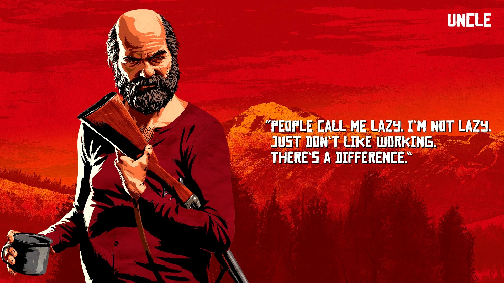

The leader of a sizeable gang of outlaws and misfits. Idealistic, anarchic, charismatic, well-read, well-lived, but possibly starting to unravel under the pressures of the encroaching modern world.

A master con artist, gentleman and thief, Hosea has been Dutch's closest friend and right-hand man for over twenty years. Intelligent and quick-witted, he can talk his way into, or out of, just about anything.
A Dublin girl and the object of Dutch’s affection, for now at least, Molly is too high-strung for a life on the run and it’s all starting to take a toll on her.
The undisputed boss and arbiter of justice in the camp, everything would have fallen apart years ago without Susan in charge. Tenacious and iron-willed, she stands for no nonsense.
The camp’s butcher and cook, Pearson served a short stint in the navy that he likes to talk about at length. A loud, jolly degenerate who is somewhat in denial about the turn his life has taken.
A career criminal and hitman. Wild and unpredictable but he lives for the action.
A relatively recent recruit to the gang, Charles is quiet and reserved but extremely competent in everything he does and virtually unbeatable in a fight. A decent, honest man who also happens to be deadly.
An ex-soldier discharged from the army, possibly dishonorably. Hot headed, he tends to act first and think later but is tough, dedicated and always ready to fight.
Originally hailing from Austria, Herr Strauss is responsible for keeping the gang’s books and running their money lending operation. A serious, somewhat shifty and unemotional man, he has all the qualities a loan shark needs.

Once an orphaned street kid taken under Dutch's wing at the age of twelve, John has always had to live by his wits. Shrewd, fearless and strong-willed, he and Arthur are Dutch’s proudest protégés.
An orphan who grew up scraping out a living in dive bars and brothels in the West, Abigail is a strong, straight-talking woman who has seen a lot of life and knows what it takes to survive against the odds.
Young Jack has grown up with the gang, although everyone has done their best to shield him from the more nefarious elements, especially his mother Abigail. He loves everything about nature and the outdoor life, and is carefully watched over by his many aunts and uncles.
A consummate scam artist and trigger woman who can drink pretty much anybody under the table. Bold and full of fun, she loves the outlaw life and wouldn’t have it any other way.

A notorious bounty hunter and Mexican revolutionary. Javier immediately had a strong connection to Dutch’s ideals. Very committed, passionate and loyal.
An outlaw from the age of 12, Tilly ran with another gang before joining up with Dutch. Savvy, resilient and dependable, she can more than handle herself and isn’t afraid to speak her mind.
A hanger-on and good-time guy, Uncle is always around when the whiskey is open and never around when there’s any work to be done. If he wasn’t so entertaining, Dutch would have cut him loose years ago.
A kind, good-natured young woman, which makes her the perfect criminal. By the time people realize they’ve been duped, Mary-Beth is already on her way home with the money.
Young Lenny has been on the run since he was 15 years old after killing the men who murdered his father. Smart, educated, competent and ambitious, he is always ready to do his part.
A flamboyant conjurer, conman and trickster, Trelawny is a very hard man to pin down but he’s always able to bring good leads.

An ex clergyman now lost to debauchery, Swanson has fallen a long way from the standards he once set himself. If he hadn’t saved Dutch’s life in the past, it’s unlikely the gang would have kept him around for this long.
A cocky young Irish thief and stick-up man who comes from a long line of criminals and political dissidents. He always wants a piece of the action and believes in himself…perhaps a little too much.
A widow who is hellbent on taking revenge upon those who killed her husband. Relentless and afraid of nothing and no one. The wrong woman to cross, but very loyal to those she loves.

Dutch's most dependable and capable enforcer since he was a boy, the outlaw life is all Arthur has ever known. Sharp, cool-headed, and ruthless, but with his own sense of honor. A man who gets the job done.